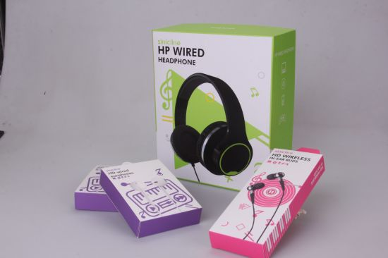
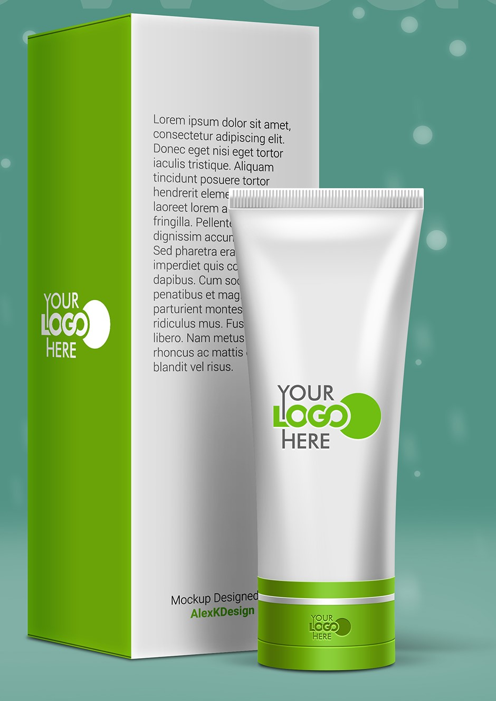
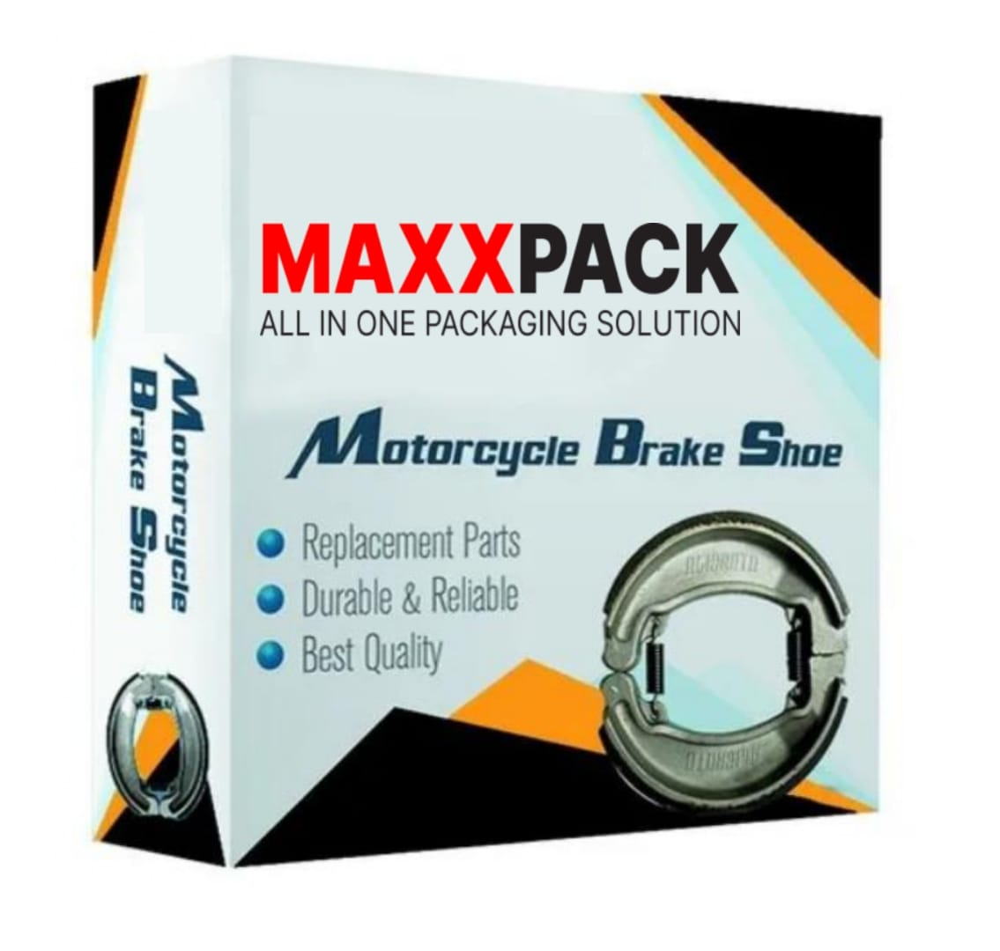

1. Pharmaceutical Industry:
In the pharmaceutical industry, mono carton boxes are crucial for packaging medications, ensuring product safety, and compliance with stringent regulatory standards. These boxes are designed to protect drugs from contamination, light, and moisture. They often feature tamper-evident seals and are printed with critical information such as dosage instructions, expiration dates, and barcodes. Their design prioritizes safety and hygiene, ensuring that the medicines reach consumers in their intended condition.

2. Food Industry:
Mono carton boxes in the food industry are utilized for packaging items like cereals, snacks, frozen foods, and ready-to-eat meals. These boxes provide excellent protection against external elements, preserving the freshness and quality of the food. They are often coated with food-grade materials to ensure no contamination occurs. The ability to print high-quality graphics on these boxes also makes them an excellent choice for brand promotion, enhancing shelf appeal and consumer trust.

3. Electrical Industry:
The electrical industry uses mono carton boxes to package products like bulbs, switches, and other small electronic components. These boxes are designed to provide strong protection against mechanical damage during transportation and storage. They often include inserts or partitions to keep the products secure and prevent movement. Additionally, the boxes are printed with essential product details, safety instructions, and branding elements.

4. Cosmetic Industry:
The cosmetic industry, mono carton boxes are vital for packaging items such as perfumes, skincare products, and makeup. These boxes are designed to be visually appealing, reflecting the luxury and quality of the product inside. The use of high-quality printing techniques and finishes, like embossing and foil stamping, enhances the aesthetic appeal of the packaging. They also offer protection against damage and contamination, ensuring the product remains intact until it reaches the customer.

5. Automotive Industry:
Mono carton boxes in the automotive industry are used for packaging small parts and accessories like spark plugs, filters, and bearings. These boxes are engineered to withstand rough handling and provide robust protection against dust, moisture, and impact. They are often customized with the brand’s logo and product information, aiding in brand recognition and ensuring that the right parts reach the end-users.

In conclusion, mono carton boxes serve as a crucial packaging solution across various industries, each tailored to meet the specific needs of the sector they serve. Whether it’s protecting delicate pharmaceutical products, preserving the freshness of food items, safeguarding electrical components, enhancing the appeal of cosmetics, or securing automotive parts, these boxes offer a perfect blend of functionality and aesthetics. Their adaptability, cost-effectiveness, and ability to be customized make them an indispensable part of modern packaging solutions.